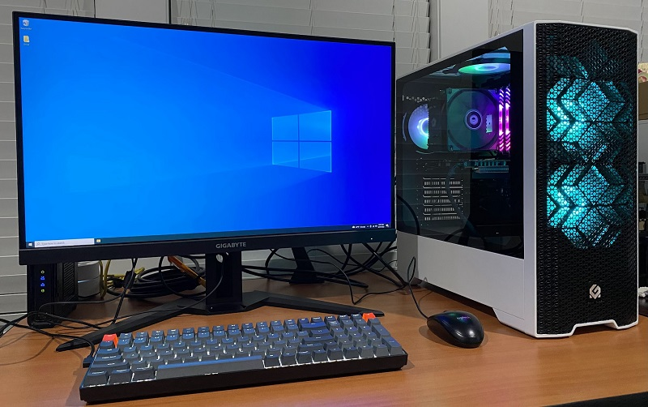
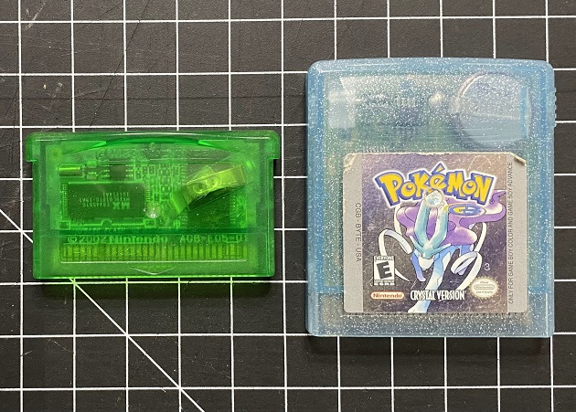
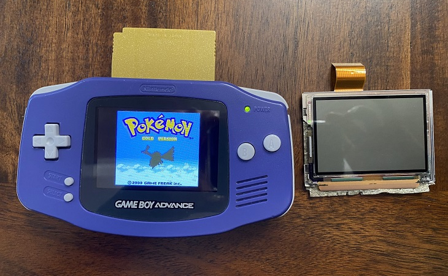
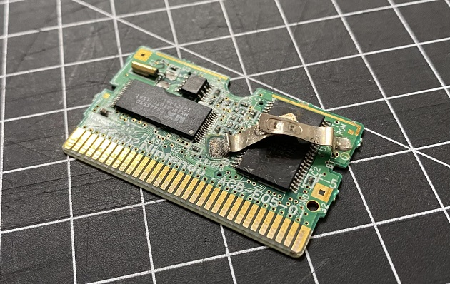
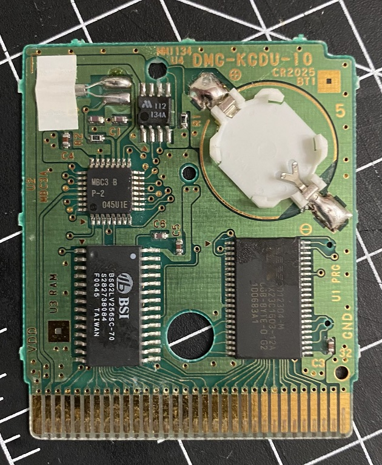
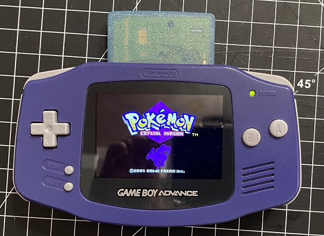

The Time I Got Rear-Ended
August 26, 2022
MY NEW 'PUTER
Thought I’d share all the crazy stuff that’s happened to me in the past month!
So for starters, I’m now on “Transcranial Magnetic Stimulation” for my depression. This is week 6 of my treatment, and it will be wrapping up in early September. I’ve been resistant to anti-depressants, but I saw improvement very quickly with the TMS. The first few days felt very strange, and when I got home I’d take a lot of naps. But the first weekend after I started, I was already feeling happier and more chipper. I'm waaaay more proactive now. Like, before doing TMS, I would not have the motivation at all to build this PC. I also started reading and drawing for fun again.
Now another thing… I got (lightly) rear-ended. The ironic thing was that we were on the way to the doctor. When I told my nurse about it, she wanted to focus on getting my neck treated instead of the thing I scheduled the appointment for. She was pretty aggressive about getting x-rayed right away, which I think will be a good look for us on our insurance claim. Plus, the original reason for my visit turned out to be a non-issue.
The person who bumped into us had the audacity to suggest that my sister BACKED UP INTO HER. It’s so absurd it just looped back to being funny. I was hoping to get settlement money but it sounds like the other person’s insurance will only cover our chiropractor visits. :( I’m building my own PC and my first thought after hearing about the insurance process was “omg I can probably afford ray tracing now”. But alas, I will have to save up for an RTX without getting hit by a car.
I'm honestly unsure if chiropractory works but it's free so why the hell not.
I’ve exclusively used laptops for the past decade, but the falling GPU prices and the death of my laptop pushed me into the PC building scene. RIP my laptop, I fucked around and found out. Looking back I’m surprised this thing didn’t die much sooner. I used to play Lobotomy Corporation for hours and it would make noises comparable to an airplane taking off (Lobcorp has a huge memory leak problem and was not meant to be played on only 8gb of RAM).
Now that I’m on desktop I’m thinking of rehauling a few portions of my site. I really love the bright Johto theme of the main pages, and the Windows 95 look of my About page, but those were the very first pages I coded, and the framework is super messy. I was just a baby web developer back then. My design philosophy at the time was "as long as it works" and that's why those pages are being held together by spaghetti.
Hannah's Soldering Adventure
May 3, 2022
Today's Patients
In 2021 I got back into the older generations of Pokémon. Specifically, gen 2, 3, and 4. Interacting with the Galar gym leaders in the SwSh DLC made me miss the weekly events in HG/SS. When I played it for the first time as a kid, I always looked forward to seeing the gym leaders out and about, taking photos with them, and calling them on the PokéGear.
As much as I loved replaying Soul Silver - RNG manip’ing for perfect IVs and Shinies, fighting in the Battle Frontier - it had me yearning for the original experience. For starters, it is absurd how fast Gen 2 is compared to the remakes! I also really missed the original sound effects.
The purple GBA I've had for over a decade. I replaced the screen with the FunnyPlaying IPS v2 Backlight Mod.
So there I was, digging up my ancient copy of Gold, when I remembered that the game is literally unplayable without a new battery. I knew a janky way to fix it - ripping out the battery and electro-taping a new one in - but the casing of Gen 2 Pokemon games are so beautiful, and it felt blasphemous to do that. I had done it before with my copy of Emerald, and I regret it.
The crusty insides of my Emerald cartridge.
It was really difficult and really scary to take Emerald's battery out. That tape did not want to budge, and I was paranoid I would damage the cart. A GBA cartridge was never meant to have tape inside of it. It was crusty as hell in there, and I noticed that the front plate got cracked because of the extra height of the tape. I had to use an exacto knife to extract the old battery, and I'm so lucky I didn't damage anything important.
Gold was my first time handling a soldering iron, and it was terrifying. It was worth it, to not have to go through the gauntlet of electro-tape all over again. But my process was not very futureproof - in a few years I will need to solder a new battery into Gold again. That's because I used a tabbed battery, which are generic brand and notoriously weak compared to duracell batteries.
Luckily, the website I bought my new screen from ALSO sells battery retainers! Now I only have to solder the retainer in once, and every time I need a new battery, I just pop the old one out.

This game was my sister’s birthday gift to me last year. The old battery was already disconnected from the tabs because she treated the cartridge as a stim toy and shook it like a maraca when she was bored. Fixing it up was a breeze compared to Emerald, because Game Boy Color carts are waaaay bigger and more accomodating for my fingers.
The sparkly blue casing looks beautiful with my purple gameboy! All-in-all I’m satisfied with today’s project.